건축기사 (2021-03-07 기출문제)
1과목: 건축계획
1. 쇼핑센터의 몰(mall)의 계획에 관한 설명으로 옳지 않은 것은?
- 전문점들과 중심상점의 주출입구는 몰에 면하도록 한다.
- 몰에는 자연광을 끌어들여 외부공간과 같은 성격을 갖게 하는 것이 좋다.
- 다층으로 계획할 경우, 시야의 개방감을 적극적으로 고려하는 것이 좋다.
- 중심상점들 사이의 몰의 길이는 100m를 초과하지 않아야 하며, 길이 40~50m마다 변화를 주는 것이 바람직하다.
(정답률: 78%)

2. 연속적인 주제를 선(線)적으로 관계성 깊게 표현하기 위하여 전경(全景)으로 펼치도록 연출하는 것으로 맥락이 중요시될 때 사용되는 특수전시기법은?
- 아일랜드 전시
- 파노라마 전시
- 하모니카 전시
- 디오라마 전시
(정답률: 83%)
3. 다음 설명에 알맞은 극장 건축의 평면형식은?
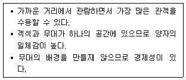
- 애리너(arena)형
- 가변형(adaptable)
- 프로시니엄(proscenium)형
- 오픈 스테이지(open stage)형
(정답률: 81%)
4. 아파트 형식에 관한 설명으로 옳지 않은 것은?
- 계단실형은 거주의 프라이버시가 높다.
- 편복도형은 복도에서 각 세대로 진입하는 형식이다.
- 메조넷형은 평면구성의 제약이 적어 소규모 주택에 주로 이용된다.
- 플랫형은 각 세대의 주거단위가 동일한 층에 배치 구성된 형식이다.
(정답률: 83%)
5. 학교운영방식에 관한 설명으로 옳지 않은 것은?
- 종합교실형은 각 학급마다 가정적인 분위기를 만들 수 있다.
- 교과교실형은 초등학교 저학년에 대해 가장 권장되는 방식이다.
- 플래툰형은 미국의 초등학교에서 과밀을 해소하기 위해 실시한 것이다.
- 달톤형은 학급, 학년 구분을 없애고 학생들은 각자의 능력에 따라 교과를 선택하고 일정한 교과를 끝내면 졸업하는 방식이다.
(정답률: 85%)
6. 다음 중 단독주택의 현관 위치 결정에 가장 주된 영향을 끼치는 것은?
- 방위
- 주택의 층수
- 거실의 위치
- 도로와의 관계
(정답률: 79%)
7. 도서관의 열람실 및 서고계획에 관한 설명으로 옳지 않은 것은?
- 서고 안에 캐럴(carrel)을 둘 수도 있다.
- 서고면적 1m2당 150~250권의 수장능력으로 계획한다.
- 열람실은 성인 1인당 3.0~3.5m2의 면적으로 계획한다.
- 서고실은 모듈러 플래닝(modular planning)이 가능하다.
(정답률: 76%)
8. 다음 중 건축계획에서 말하는 미의 특성 중 변화 또는 다양성을 얻는 방식과 가장 거리가 먼 것은?
- 억양(Accent)
- 대비(Contrast)
- 균제(Proportion)
- 대칭(Symmetry)
(정답률: 75%)
9. 공장건축의 레이아웃(Lay out)에 관한 설명으로 옳지 않은 것은?
- 제품중심의 레이아웃은 대량생산에 유리하며 생산성이 높다.
- 레이아웃이란 생산품의 특성에 따른 공장의 건축면적 결정 방식을 말한다.
- 공정중심의 레이아웃은 다종 소량생산으로 표준화가 행해지기 어려운 경우에 적합하다.
- 고정식 레이아웃은 조선소와 같이 조립부품이 고정된 장소에 있고 사람과 기계를 이동시키며 작업을 행하는 방식이다.
(정답률: 68%)
10. 주택단지 도로의 유형 중 쿨데삭(cul-de-sac)형에 관한 설명으로 옳은 것은?
- 단지 내 통과교통의 배제가 불가능하다.
- 교차로가 +자형이므로 자동차의 교통처리에 유리하다.
- 우회도로가 없기 때문에 방재상 불리하다는 단점이 있다.
- 주행속도 감소를 위해 도로의 교차방식을 주로 T자 교차로 한 형태이다.
(정답률: 70%)
11. 사무소 건축의 실단위 계획에 관한 설명으로 옳지 않은 것은?
- 개실 시스템은 독립성과 쾌적감의 이점이 있다.
- 개방식 배치는 전면적을 유용하게 이용할 수 있다.
- 개방식 배치는 개실 시스템보다 공사비가 저렴하다.
- 개실 시스템은 연속된 긴 복도로 인해 방 깊이에 변화를 주기가 용이하다.
(정답률: 83%)
12. 미술관 전시실의 순회형식 중 연속 순회형식에 관한 설명으로 옳은 것은?
- 각 전시실에 바로 들어갈 수 있다는 장점이 있다.
- 연속된 전시실의 한 쪽 복도에 의해서 각 실을 배치한 형식이다.
- 중심부에 하나의 큰 홀을 두고 그 주위에 각 전시실을 배치한 형식이다.
- 전시실을 순서별로 통해야 하고, 한 실을 폐쇄하면 전체 동선이 막히게 된다.
(정답률: 84%)
13. 사무소 건축의 코어 유형에 관한 설명으로 옳지 않은 것은?
- 편심코어형은 기준층 바닥면적이 작은 경우에 적합하다.
- 독립코어형은 코어를 업무공간에서 별도로 분리시킨 형식이다.
- 중심코어형은 코어가 중앙에 위치한 유형으로 유효율이 높은 계획이 가능하다.
- 양단코어형은 수직동선이 양 측면에 위치한 관계로 피난에 불리하다는 단점이 있다.
(정답률: 81%)
14. 비잔틴 건축에 관한 설명으로 옳지 않은 것은?
- 사라센 문화의 영향을 받았다.
- 도저렛(dosseret)이 사용되었다.
- 펜덴티브 돔(Pendentive dome)이 사용되었다.
- 평면은 주로 장축형 평면(라틴 십자가)이 사용되었다.
(정답률: 58%)
15. 다음과 같은 특징을 갖는 에스컬레이터 배치 유형은?
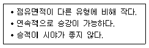
- 교차식 배치
- 직렬식 배치
- 병렬 단속식 배치
- 병렬 연속식 배치
(정답률: 65%)
16. 클로즈드 시스템(closed system)의 종합병원에서 외래진료부 계획에 관한 설명으로 옳지 않은 것은?
- 환자의 이용이 편리하도록 2층 이하에 두도록 한다.
- 부속 진료시설을 인접하게 하여 이용이 편리하게 한다.
- 중앙주사실, 약국은 정면 출입구에서 멀리 떨어진 곳에 둔다.
- 외과 계통 각 과는 1실에서 여러 환자를 볼 수 있도록 대실로 한다.
(정답률: 83%)
17. 다음 중 다포식(多包式) 건축으로 가장 오래된 것은?
- 창경궁 명정전
- 전등사 대웅전
- 불국사 극락전
- 심원사 보광전
(정답률: 56%)
18. 다음 중 시티 호텔에 속하지 않는 것은?
- 비치 호텔
- 터미널 호텔
- 커머셜 호텔
- 아파트먼트 호텔
(정답률: 81%)
19. 고대 그리스의 기둥 양식에 속하지 않는 것은?
- 도리아식
- 코린트식
- 컴포지트식
- 이오니아식
(정답률: 68%)
20. 주택의 동선계획에 관한 설명으로 옳지 않은 것은?
- 동선은 가능한 굵고 짧게 계획하는 것이 바람직하다.
- 동선의 3요소 중 속도는 동선의 공간적 두께를 의미한다.
- 개인, 사회, 가사노동권의 3개 동선은 상호간 분리하는 것이 좋다.
- 화장실, 현관 등과 같이 사용빈도가 높은 공간은 동선을 짧게 처리하는 것이 중요하다.
(정답률: 83%)
2과목: 건축시공
21. 수직굴삭, 수중굴삭 등에 사용되는 깊은 흙파기용 기계이며, 연약지반에 사용하기에 적당한 기계는?
- 드래그 쇼벨
- 크램쉘
- 모터 그레이더
- 파워 쇼벨
(정답률: 67%)
22. 철근의 가공 및 조립에 관한 설명으로 옳지 않은 것은?
- 철근의 가공은 철근상세도에 표시된 형상과 치수가 일치하고 재질을 해치지 않은 방법으로 이루어져야 한다.
- 철근상세도에 철근의 구부리는 내면 반지름이 표시되어 있지 않은 때에는 KDS에 규정된 구부림의 최소 내면 반지름 이상으로 철근을 구부려야 한다.
- 경미한 녹이 발생한 철근이라 하더라도 일반적으로 콘크리트와의 부착성능을 매우 저하시키므로 사용이 불가하다.
- 철근은 상온에서 가공하는 것을 원칙으로 한다.
(정답률: 79%)
23. 건축주 자신이 특정의 단일 상태를 선정하여 발주하는 방식으로서, 특수공사나 기밀보장이 필요한 경우, 또 긴급을 요하는 공사에서 주로 채택되는 것은?
- 공개경쟁입찰
- 제한경쟁입찰
- 지명경쟁입찰
- 특명입찰
(정답률: 77%)
24. 문 윗틀과 문짝에 설치하여 문이 자동적으로 닫혀지게 하며, 개폐압력을 조절할 수 있는 장치는?
- 도어 체크(Door check)
- 도어 홀더(Door holder)
- 피봇 힌지(Pivot hinge)
- 도어 체인(Door chain)
(정답률: 76%)
25. 건축 석공사에 관한 설명으로 옳지 않은 것은?
- 건식쌓기 공법의 경우 시공이 불량하면 백화현상 등의 원인이 된다.
- 석재 물갈기 마감 공정의 종류는 거친갈기, 물갈기, 본갈기, 정갈기가 있다.
- 시공 전에 설계도에 따라 돌나누기 상세도, 원척도를 만들고 석재의 치수, 형상, 마감방법 및 철물 등에 의한 고정방법을 정한다.
- 마감면에 오염의 우려가 있는 경우에는 폴리에틸렌 시트 등으로 보양한다.
(정답률: 58%)
26. 벤치마크(Bench Mark)에 관한 설명으로 옳지 않은 것은?
- 적어도 2개소 이상 설치하도록 한다.
- 이동 또는 소멸 우려가 없는 곳에 설치한다.
- 건축물 기초의 너비 또는 길이 등을 표시하기 위한 것이다.
- 공사 완료시까지 존치시켜야 한다.
(정답률: 73%)
27. 방부력이 약하고 도포용으로만 쓰이며, 상온에서 침투가 잘 되지 않고 흑색이므로 사용 장소가 제한되는 유성방부제는?
- 캐로신
- PCP
- 염화아연 4% 용액
- 콜타르
(정답률: 73%)
28. 시멘트 600포대를 저장할 수 있는 시멘트 창고의 최소 필요면적으로 옳은 것은? (단, 시멘트 600포대 전량을 저장할 수 있는 면적으로 산정)
- 18.46m2
- 21.64m2
- 23.25m2
- 25.84m2
(정답률: 58%)
29. 시멘트, 모래 ,잔자갈, 안료 등을 섞어 이긴 것을 바탕마름이 마르기 전에 뿌려 붙이거나 또는 바르는 것으로 일종의 인조석바름으로 볼 수 있는 것은?
- 회반죽
- 경석고 플라스터
- 혼합석고 플라스터
- 라프 코트
(정답률: 47%)
30. 용접작업 시 용착금속 단면에 생기는 작은 은색의 점을 무엇이라 하는가?
- 피시 아이(fish eye)
- 블로 홀(blow hole)
- 슬래그 함입(slag inclusion)
- 크레이터(crater)
(정답률: 82%)
31. 달성가치(Earned Value)를 기준으로 원가관리를 시행할 때, 실제투입원가와 계획된 일정에 근거한 진행성과 차이를 의미하는 용어는?
- CV(Cost Variance)
- SV(Schedule Variance)
- CPI(Cost Performance Index)
- SPI(Schedule Performance Index)
(정답률: 54%)
32. 시멘트 200포를 사용하여 배합비가 1:3:6의 콘크리트를 비벼 냈을 때의 전체 콘크리트량은? (단, 물-시멘트 비는 60%이고 시멘트 1포대는 40kg이다.)
- 25.25m3
- 36.36m3
- 39.39m3
- 44.44m3
(정답률: 62%)
33. 타일공사에서 시공 후 타일접착력 시험에 관한 설명으로 옳지 않은 것은?
- 타일의 접착력 시험은 600m2당 한 장씩 시험한다.
- 시험할 타일은 먼저 줄눈 부분을 콘크리트면까지 절단하여 주위의 타일과 분리시킨다.
- 시험은 타일 시공 후 4주 이상일 때 행한다.
- 시험결과의 판정은 타일 인장 부착강도가 10MPa 이상이어야 한다.
(정답률: 67%)
34. 창면적이 클 때에는 스틸바(steel bar)만으로는 부족하고, 또한 여닫을 때의 진동으로 유리가 파손될 우려가 있으므로 이것을 보강하고 외관을 꾸미기 위하여 강판을 중공형으로 접어 가로 또는 세로로 대는 것을 무엇이라 하는가?
- mullion
- ventilator
- gallery
- pivot
(정답률: 74%)
35. 벽돌조 건물에서 벽량이란 해당 층의 바닥면적에 대한 무엇의 비를 말하는가?
- 벽면적의 총합계
- 내력벽길이의 총합계
- 높이
- 벽두께
(정답률: 59%)
36. PMIS(프로젝트 관리 정보시스템)의 특징에 관한 설명으로 옳지 않은 것은?
- 합리적인 의사결정을 위한 프로젝트용 정보관리시스템이다.
- 협업관리체계를 지원하며 정보의 공유와 축적을 지원한다.
- 공정 진척도는 구체적으로 측정할 수 없으므로 별도 관리한다.
- 조직 및 월간업무 현황 등을 등록하고 관리한다.
(정답률: 76%)
37. 콘크리트 거푸집 용 박리제 사용 시 주의사항으로 옳지 않은 것은?
- 거푸집종류에 상응하는 박리제를 선택·사용한다.
- 박리제 도포 전에 거푸집면의 청소를 철저히 한다.
- 거푸집 뿐만 아니라 철근에도 도포하도록 한다.
- 콘크리트 색조에 영향이 없는지를 시험한다.
(정답률: 81%)
38. 다음 중 도장공사를 위한 목부 바탕만들기 공정으로 옳지 않은 것은?
- 오염, 부착물의 제거
- 송진의 처리
- 옹이땜
- 바니쉬칠
(정답률: 75%)
39. 건축용 목재의 일반적인 성질에 관한 설명으로 옳지 않은 것은?
- 섬유포화점 이하에서는 목재의 함수율이 증가함에 따라 강도는 감소한다.
- 기건상태의 목재의 함수율은 15% 정도이다.
- 목재의 심재는 변재보다 건조에 의한 수축이 적다.
- 섬유포화점 이상에서는 목재의 함수율이 증가함에 따라 강도는 증가한다.
(정답률: 65%)
40. 건축공사에서 V.E(Value Engineering)의 사고방식으로 옳지 않은 것은?
- 기능분석
- 제품위주의 사고
- 비용절감
- 조직적 노력
(정답률: 59%)
3과목: 건축구조
41. 다음 그림과 같이 D16철근이 90°표준갈고리로 정착되었다면 이 갈고리의 소요정착길이(lhb)는 약 얼마인가?
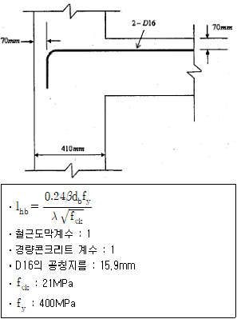
- 233mm
- 243mm
- 253mm
- 263mm
(정답률: 45%)
42. 연약한 지반에서 기초의 부동침하를 감소시키기 위한 상부구조에 대한 대책으로 옳지 않은 것은?
- 건물을 경량화 할 것
- 강성을 크게 할 것
- 이웃 건물과의 거리를 멀게 할 것
- 폭이 일정한 경우 건물의 길이를 길게 할 것
(정답률: 71%)
43. 그림과 같은 라멘 구조물의 판별은?
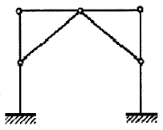
- 불안정 구조물
- 안정이며, 정정구조물
- 안정이며, 1차 부정정구조물
- 안정이며, 2차 부정정구조물
(정답률: 68%)
44. 그림과 같이 양단이 회전단인 부재의 좌굴축에 대한 세장비는?
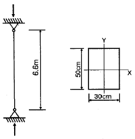
- 76.21
- 84.28
- 94.64
- 103.77
(정답률: 49%)
45. 강구조 용접에서 용접 개시점과 종료점에 용착금속에 결함이 없도록 임시로 부착하는 것은?
- 엔드탭(End tap)
- 오버랩(Overlap)
- 뒷댐재(Backing Strip)
- 언더컷(Under cut)
(정답률: 76%)
46. 다음 각 구조시스템에 관한 정의로 옳지 않은 것은?
- 모멘트골조방식 : 수직하중과 횡력을 보와 기둥으로 구성된 라멘골조가 저항하는 구조방식
- 연성모멘트골조방식 : 횡력에 대한 저항능력을 증가시키기 위하여 부재와 접합부의 연성을 증가시킨 모멘트골조방식
- 이중골조방식 : 횡력의 25% 이상을 부담하는 전단벽이 연성모멘트골조와 조합되어 있는 구조방식
- 건물골조방식 : 수직하중은 입체골조가 저항하고 지진하중은 전단벽이나 가새골조가 저항하는 구조방식
(정답률: 66%)
47. 그림과 같은 콘크리트 슬래브에서 합성보 A의 슬래브 유효폭 be를 구하면? (단, 그림의 단위는 mm임)
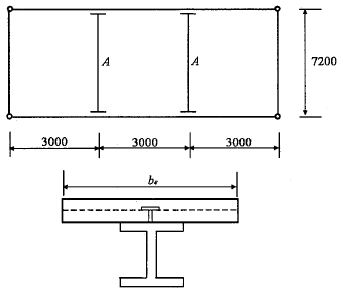
- 1500mm
- 1800mm
- 2000mm
- 2250mm
(정답률: 54%)
48. 그림과 같은 등변분포하중이 작용하는 단순보의 최대휨모멘트 Mmax는?
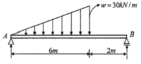
- 25√3kN·m
- 25√2kN·m
- 90√3kN·m
- 90√2kN·m
(정답률: 41%)
49. 보의 재질과 단면의 크기가 같을 때 (A)보의 최대처짐은 (B)보의 몇 배인가?
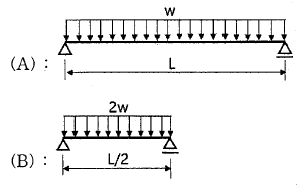
- 2배
- 4배
- 8배
- 16배
(정답률: 49%)
50. 그림과 같은 원통단면의 핵반경은?
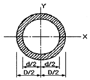
- (D+d)/6
- D/8
- (D+d)/8
- (D2+d2)/8D
(정답률: 61%)
51. 다음 그림에서 파단선 A-B-F-C-D의 인장재 순단면적은? (단, 볼트구멍지름 d : 22mm, 인장재 두께는 6mm)
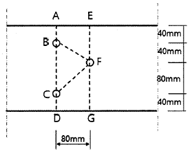
- 1164mm2
- 1364mm2
- 1564mm2
- 1764mm2
(정답률: 47%)
52. 그림과 같은 독립기초에 N=480kN, M=96kN·m가 작용할 때 기초저면에 발생하는 최대 지반반력은?
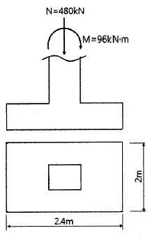
- 15kN/m2
- 150kN/m2
- 20kN/m2
- 200kN/m2
(정답률: 60%)
53. 그림과 같은 트러스에서 a부재의 부재력은 얼마인가?
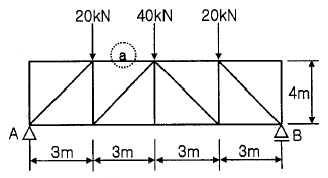
- 20kN(인장)
- 30kN(압축)
- 40kN(인장)
- 60kN(압축)
(정답률: 62%)
54. 그림과 같은 단면에 전단력 40kN이 작용할 때 A점에서 전단응력은?
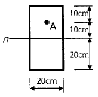
- 0.28MPa
- 0.56MPa
- 0.84MPa
- 1.12MPa
(정답률: 40%)
55. 그림과 같이 O점에 모멘트가 작용할 때 OB부재와 OC부재에 분배되는 모멘트가 같게 하려면 OC부재의 길이를 얼마로 해야 하는가?
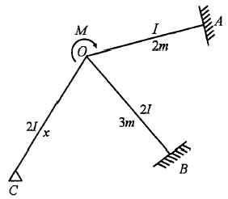
- 2/3m
- 3/2m
- 9/4m
- 3m
(정답률: 51%)
56. 다음 그림과 같은 필릿용접부의 유효 면적은?
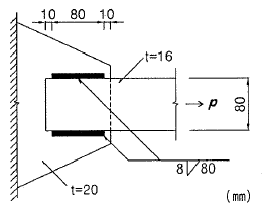
- 614.4mm2
- 691.2mm2
- 716.8mm2
- 806.4mm2
(정답률: 56%)
57. 강도설계법에서 철근콘크리트 부재 중 콘크리트의 공칭전단강도(Vc)가 40kN, 전단철근에 의한 공칭전단강도(Vs)가 20kN일 때, 이 부재의 설계전단강도(øVn)는? (단, 강도감소계수는 0.75 적용)
- 60kN
- 48kN
- 52kN
- 45kN
(정답률: 46%)
58. 지진계에 기록된 진폭을 진원의 깊이와 진앙까지의 거리 등을 고려하여 지수로 나타낸 것으로 장소에 관계없는 절대적 개념의 지진크기를 말하는 것은?
- 규모
- 진도
- 진원시
- 지진동
(정답률: 69%)
59. 철근 콘크리트 단순보에서 순간탄성처짐이 0.9mm이었다면 1년 뒤 이 부재의 총처짐량을 구하면? (단, 시간경과계수 ξ=1.4, 압축철근비 ρ′=0.01071)
- 1.52mm
- 1.72mm
- 1.92mm
- 2.12mm
(정답률: 53%)
60. 철근콘크리트 압축부재의 철근량 제한 조건에 따라 사각형이나 원형 띠철근으로 둘러싸인 경우 압축부재의 축방향 주철근의 최소 개수는 얼마인가?
- 2개
- 3개
- 4개
- 6개
(정답률: 57%)
4과목: 건축설비
61. 다음과 같은 조건에서 2000명을 수용하는 극장의 실온을 20℃로 유지하기 위한 필요 환기량은?
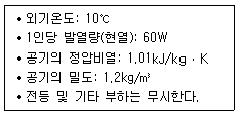
- 11110m3/h
- 21222m3/h
- 30444m3/h
- 35644m3/h
(정답률: 48%)
62. 광원으로부터 일정거리 떨어진 소조면의 조도에 관한 설명으로 옳지 않은 것은?
- 광원의 광도에 비례한다.
- cosθ(입사각)에 비례한다.
- 거리의 제곱에 반비례한다.
- 측정점의 반사율에 반비례한다.
(정답률: 49%)
63. 화재안전기준에 따라 소화기구를 설치하여야 하는 특정소방대상물의 연면적 기준은?
- 10m2 이상
- 25m2 이상
- 33m2 이상
- 50m2 이상
(정답률: 54%)
64. 다음과 같은 공식을 통해 산출되는 값으로 전기 설비가 어느 정도 유효하게 사용되는가를 나타내는 것은?
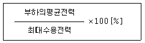
- 부하율
- 보상률
- 부등률
- 수용률
(정답률: 72%)
65. 음의 세기가 10-9W/m2 일 때 음의 세기 레벨은? (단, 기준음의 세기 Io=10-12W/m2 이다.)
- 3dB
- 30dB
- 0.3dB
- 0.03dB
(정답률: 55%)
66. 급탕설비 중 개별식 급탕방식에 관한 설명으로 옳지 않은 것은?
- 배관길이가 길어 배관 중의 열손실이 크다.
- 건물 완공 후에도 급탕 개소의 증설이 비교적 쉽다.
- 급탕개소마다 가열기의 설치 스페이스가 필요하다.
- 용도에 따라 필요한 개소에서 필요한 온도의 탕의 비교적 간단하게 얻을 수 있다.
(정답률: 60%)
67. 플러시 밸브식 대변기에 관한 설명으로 옳은 것은?
- 대변기의 연속사용이 가능하다.
- 급수관경과 급수압력에 제한이 없다.
- 우리나라에서는 일반 주택을 중심으로 널리 채용되고 있다.
- 탱크에 저장된 물의 낙차에 의한 수압으로 대변기를 세척하는 방식이다.
(정답률: 53%)
68. 공기조화방식 중 2중덕트방식에 관한 설명으로 옳지 않은 것은?
- 전공기방식에 속한다.
- 냉·온풍의 혼합으로 인한 혼합손실이 있어 에너지 소비량이 많다.
- 단일덕트방식에 비해 덕트 샤프트 및 덕트 스페이스를 크게 차지한다.
- 부하특성이 다른 여러 개의 실이나 존이 있는 건물에는 적용할 수 없다.
(정답률: 63%)
69. 다음과 같은 특징을 갖는 간선 배선 방식은?
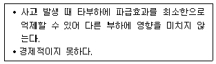
- 평행식
- 나뭇가지식
- 네트워크식
- 나뭇가지 평행 병용식
(정답률: 71%)
70. 압축식 냉동기의 냉동사이클로 옳은 것은?
- 압축 → 응축 → 팽창 → 증발
- 압축 → 팽창 → 응축 → 증발
- 응축 → 증발 → 팽창 → 압축
- 팽창 → 증발 → 응축 → 압축
(정답률: 74%)
71. 온수난방과 비교한 증기난방의 설명으로 옳은 것은?
- 예열시간이 길다.
- 한랭지에서 동결의 우려가 있다.
- 부하변동에 따른 방열량 제어가 용이하다.
- 열매온도가 높으므로 방열기의 방열면적이 작아진다.
(정답률: 60%)
72. 바닥면적이 50[m2]인 사무실이 있다. 32[W] 형광등 20개를 균등하게 배치할 때 사무실의 평균 조도는? (단, 형광등 1개의 광속은 3300[lm], 조명율은 0.5, 보수율은 0.76 이다.)
- 약 350[lx]
- 약 400[lx]
- 약 450[lx]
- 약 500[lx]
(정답률: 34%)
73. 배수트랩에서 봉수깊이에 관한 설명으로 옳지 않은 것은?
- 봉수깊이는 50~100mm로 하는 것이 보통이다.
- 봉수깊이가 너무 낮으면 봉수를 손실하기 쉽다.
- 봉수깊이를 너무 깊게 하면 통수능력이 감소된다.
- 봉수깊이를 너무 깊게 하면 유수의 저항이 감소된다.
(정답률: 62%)
74. 카(car)가 최상층이나 최하층에서 정상 운행 위치를 벗어나 그 이상으로 운행하는 것을 방지하는 엘리베이터 안전장치는?
- 완충기
- 가이드 레일
- 리미트 스위치
- 카운터 웨이트
(정답률: 76%)
75. 전기설비에서 경질 비닐관 공사에 관한 설명으로 옳은 것은?
- 절연성과 내식성이 강하다.
- 자성체이며 금속관보다 시공이 어렵다.
- 온도 변화에 따라 기계적 강도가 변하지 않는다.
- 부식성 가스가 발생하는 곳에는 사용할 수 없다.
(정답률: 66%)
76. 변전실에 관한 설명으로 옳지 않은 것은?
- 부하의 중심에 설치한다.
- 외부로부터 전력의 수전이 용이해야 한다.
- 발전기실과 가능한 한 거리를 두고 설치한다.
- 간선의 배선과 점검·유지보수가 용이한 장소에 설치한다.
(정답률: 76%)
77. 환기에 관한 설명으로 옳지 않은 것은?
- 화장실은 송풍기(급기팬)와 배풍기(배기팬)를 설치하는 것이 일반적이다.
- 기밀성이 높은 주택의 경우 잦은 기계환기를 통해 실내공기의 오염을 낮추는 것이 바람직하다.
- 병원의 수술실은 오염공기가 실내로 들어오는 것을 방지하기 위해 실내압력을 주변공간보다 높게 설정한다.
- 공기의 오염농도가 높은 도로에 면해 있는 건물의 경우, 공기조화설비 계통의 외기도입구를 가급적 높은 위치에 설치한다.
(정답률: 67%)
78. 액화천연가스(LNG)에 관한 설명으로 옳지 않은 것은?
- 메탄이 주성분이다.
- 무공해, 무독성이다.
- 비중이 공기보다 크다.
- 일반적으로 배관을 통해 공급한다.
(정답률: 65%)
79. 다음 중 지역난방에 적용하기에 가장 적합한 보일러는?
- 수관보일러
- 관류보일러
- 입형보일러
- 주철제보일러
(정답률: 56%)
80. 다음 중 급탕설비에서 온수 순환 펌프로 주로 이용되는 것은?
- 사류 펌프
- 원심식 펌프
- 왕복식 펌프
- 회전식 펌프
(정답률: 48%)
5과목: 건축법규
81. 건축물의 관람실 또는 집회실로부터 바깥쪽으로의 출구로 쓰이는 문을 안여닫이로 해서는 안 되는 건축물은?
- 위락시설
- 수련시설
- 문화 및 집회시설 중 전시장
- 문화 및 집회시설 중 동·식물원
(정답률: 48%)
82. 다음은 대지의 조경에 관한 기준 내용이다. ( )안에 알맞은 것은?
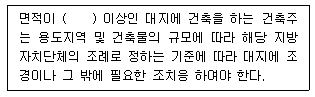
- 100m2
- 200m2
- 300m2
- 500m2
(정답률: 68%)
83. 노외주차장에 설치하는 부대시설의 총 면적은 주차장 총 시설면적의 최대 얼마를 초과 하여서는 아니 되는가?
- 5%
- 10%
- 20%
- 30%
(정답률: 42%)
84. 노외주차장에 설치하여야 하는 차로의 최소 너비가 가장 작은 주차형식은? (단, 출입구가 2개 이상이며, 이륜자동차전용 외의 노외주차장의 경우)
- 평행주차
- 교차주차
- 직각주차
- 45도 대향주차
(정답률: 64%)
85. 국토교통부령으로 정하는 바에 따라 방화구조로 하거나 불연재료로 하여야 하는 목조 건축물의 최소 연면적 기준은?
- 500m2 이상
- 1000m2 이상
- 1500m2 이상
- 2000m2 이상
(정답률: 56%)
86. 거실의 반자설치와 관련된 기준 내용 중, ( )안에 들어갈 수 있는 건축물의 용도는?
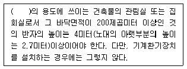
- 장례식장
- 교육 및 연구시설
- 문화 및 집회시설 중 동물원
- 문화 및 집회시설 중 전시장
(정답률: 46%)
87. 건축물의 건축 시 허가 대상 건축물이라 하더라도 미리 특별자치시장·특별자치도지사 또는 시장·군수·구청장에게 국토교통부령으로 정하는 바에 따라 신고를 하면 건축허가를 받은 것으로 보는 소규모 건축물의 연면적 기준은?
- 연면적의 합계가 100m2 이하인 건축물
- 연면적의 합계가 150m2 이하인 건축물
- 연면적의 합계가 200m2 이하인 건축물
- 연면적의 합계가 300m2 이하인 건축물
(정답률: 53%)
88. 광역도시계획의 수립권자 기준에 대한 내용으로 틀린 것은?
- 광역계획권이 같은 도의 관할 구역에 속하여 있는 경우, 관할 시장 또는 군수가 공동으로 수립한다.
- 국가계획과 관련된 광역도시계획의 수립이 필요한 경우 국토교통부장관이 수립한다.
- 광역계획권을 지정한 날부터 2년이 지날때까지 관할 시장 또는 군수로부터 광역도시계획의 승인 신청이 없는 경우 국토교통부장관이 수립한다.
- 광역계획권이 둘 이상의 시·도의 관할 구역에 걸쳐 있는 경우, 관할 시·도지사가 공동으로 수립한다.
(정답률: 52%)
89. 지구단위계획 중 관계 행정기관의 장과의 협의, 국토교통부장관과의 협의 및 중앙도시계획위원회·지방도시계획위원회 또는 공동위원회의 심의를 거치지 않고 변경할 수 있는 사항에 관한 기준 내용으로 옳은 것은?
- 건축선의 2m 이내의 변경인 경우
- 획지면적의 30% 이내의 변경인 경우
- 가구면적의 20% 이내의 변경인 경우
- 건축물 높이의 30% 이내의 변경인 경우
(정답률: 48%)
90. 공동주택과 오피스텔 난방설비를 개별난방방식으로 하는 경우에 관한 기준 내용으로 틀린 것은?
- 보일러의 연도는 내화구조로서 공동연도로 설치할 것
- 보일러실의 윗부분에는 그 면적이 0.5m2 이상인 환기창을 설치할 것
- 오피스텔의 경우에는 난방구획을 방화구획으로 구획할 것
- 보일러는 거실 외의 곳에 설치하되, 보일러를 설치하는 곳과 거실 사이의 경계벽은 출입구를 제외하고는 방화구조의 벽으로 구획할 것
(정답률: 49%)
91. 대형건축물의 건축허가 사전승인신청 시 제출 도서의 종류 중 설계설명서에 표시하여야 할 사항이 아닌 것은?
- 공사금액
- 개략공정계획
- 교통처리계획
- 각부 구조계획
(정답률: 58%)
92. 주거에 쓰이는 바닥면적의 합계가 200제곱미터인 주거용 건축물에 설치하는 음용수용 급수관의 최소 지름 기준은?
- 25mm
- 32mm
- 40mm
- 50mm
(정답률: 51%)
93. 건축법령상 건축물의 대지에 공개 공지 또는 공개 공간을 확보하여야 하는 대상 건축물에 해당하지 않는 것은? (단, 해당 용도로 쓰는 바닥면적의 합계가 5000m2인 건축물의 경우로, 건축조례로 정하는 다중이 이용하는 시설의 경우는 고려하지 않는다.)
- 종교시설
- 업무시설
- 숙박시설
- 교육연구시설
(정답률: 45%)
94. 국토의 계획 및 이용에 관한 법령상 건폐율의 최대 한도가 가장 높은 용도지역은?
- 준주거지역
- 생산관리지역
- 중심상업지역
- 전용공업지역
(정답률: 68%)
95. 중고층주택을 중심으로 편리한 주거환경을 조성하기 위하여 지정하는 용도지역은?
- 제1종 일반주거지역
- 제2종 일반주거지역
- 제3종 일반주거지역
- 제4종 일반주거지역
(정답률: 50%)
96. 대지의 분할 제한과 관련한 아래 내용에서, 밑줄 친 부분에 해당하는 규모가 기준이 틀린 것은?
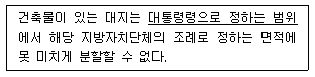
- 주거지역 : 60m2 이상
- 상업지역 : 100m2 이상
- 공업지역 : 150m2 이상
- 녹지지역 : 200m2 이상
(정답률: 48%)
97. 일조 등의 확보를 위한 건축물의 높이 제한 기준 중 ㉠과 ㉡에 해당하는 내용이 옳은 것은?
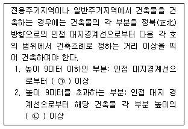
- ㉠ 1m
- ㉠ 1.5m
- ㉡ 3분의 1
- ㉡ 3분의 2
(정답률: 70%)
98. 건축물 관련 건축기준의 허용오차 범위 기준이 2% 이내가 아닌 것은?
- 출구너비
- 반자높이
- 평면길이
- 벽체두께
(정답률: 57%)
99. 다음 중 승용승강기를 가장 많이 설치해야 하는 건축물의 용도는? (단, 6층 이상의 거실면적의 합계가 10000m2이며, 8인승 승강기를 설치하는 경우)
- 의료시설
- 위락시설
- 숙박시설
- 공동주택
(정답률: 65%)
100. 비상용승강기 승강장의 바닥면적은 비상용승강기 1대에 대하여 최소 얼마 이상으로 하여야 하는가? (단, 옥내 승강장인 경우)
- 3m2
- 4m2
- 5m2
- 6m2
(정답률: 66%)